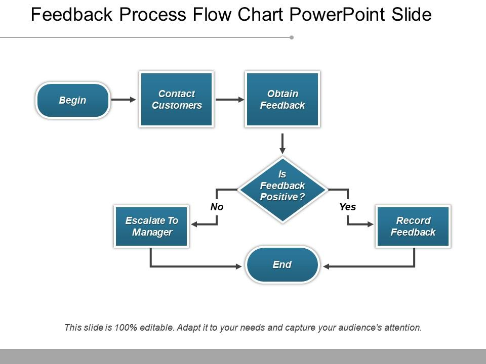

This is the root page of the "enabled" section.
The test will create a feedback package at this location, which should make all pages under this path enabled for BackChannel.
Effective report feedback should be specific and actionable, providing clear details about what aspects of performance or content were successful and which areas need improvement. By focusing on concrete examples and measurable criteria, feedback becomes a valuable tool for growth rather than vague commentary. Recipients can then understand exactly what actions they need to take to enhance their work or maintain high standards.
Timely feedback delivery significantly impacts its effectiveness, as insights provided shortly after task completion allow for immediate reflection and adjustment. When feedback is delayed, the context and nuances of the original work may fade from memory, reducing the opportunity for meaningful learning. Organizations that prioritize rapid feedback cycles typically see faster improvement rates and higher engagement from team members who appreciate the responsive communication.
Balanced feedback that acknowledges both strengths and areas for development creates a more receptive environment for professional growth. This approach, often called the 'feedback sandwich' method, helps maintain motivation while still addressing necessary improvements. Research shows that individuals are more likely to implement suggested changes when they feel their existing contributions are also recognized and valued.
Collaborative feedback processes that invite dialogue rather than one-way communication tend to yield better long-term results. When recipients have the opportunity to ask questions, seek clarification, or provide context about their decisions, the feedback becomes more meaningful and personalized. This interactive approach transforms feedback from a passive experience into an active learning opportunity that builds stronger professional relationships and shared understanding.